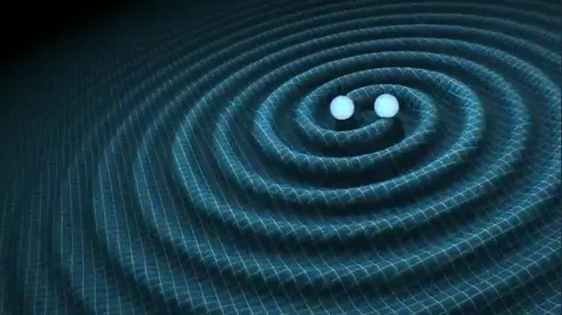

Sky Events
Stay updated on upcoming celestial events in the night sky.
Interstellar Odyssey:
Launched in 1977, the Voyager spacecraft have become symbols of human curiosity and exploration. Voyager 1 became the
first human-made object to enter interstellar space in 2012, providing invaluable data about this unknown region.
Voyager 2 is the only spacecraft to have visited all four outer planets: Jupiter, Saturn, Uranus, and Neptune, and it
joined its twin in interstellar space in 2018.
(Image: the famous "Pale Blue Dot" taken on 13th anniverary of Voyager 1 (Feb 14, 1990), for the last time it looked back and captured this iconic image from staggering 5.95 billion km,where earth looks like a tiny speck of dust (smaller than a pixel) yet it represents our entire world, home to everyone you have ever known, every human being ever lived, all our history, our joys, sorrows, and the cumulative experience of humanity)

Ripple in Spacetime:
When two massive Black Holes merge, the collision is so energetic that it twists the fabric of spacetime, sending ripples (gravitational waves) accross the galaxies (Einstein's General Theory of Relativity) The first direct observation of gravitational waves, GW150914, was made on September 14, 2015, by the LIGO and Virgo
collaborations. This monumental discovery confirmed a key prediction of Einstein's theory of general relativity and
provided the first direct evidence of black holes merging.
.png)
The First Image of Black Hole:
On April 10, 2019, the Event Horizon Telescope collaboration released the first-ever image of a black hole's event
horizon. This image, taken of the supermassive black hole in the center of the galaxy M87 (located in Virgo constellation), showed a bright ring formed
as light bends in the intense gravity around the black hole

New Worlds Beyond:
The discovery of exoplanets has revolutionized our understanding of the universe, among the stars we find many twins of our beloved Earth, which could potentially harbour Alien life forms, here are some notable ones:
Kepler-62e: With an Earth Similarity Index (ESI) value of 0.83, Kepler-62e is considered one of the most Earth-like
exoplanets discovered so far
Gliese 12 b: Located just 40 light-years away, Gliese 12 b orbits a cool, red dwarf star and has an estimated surface
temperature that could potentially allow for liquid water
Kepler-186f: Discovered in 2014, Kepler-186f is located in the habitable zone of its star and is similar in size to
Earth, making it a tantalizing prospect for habitability